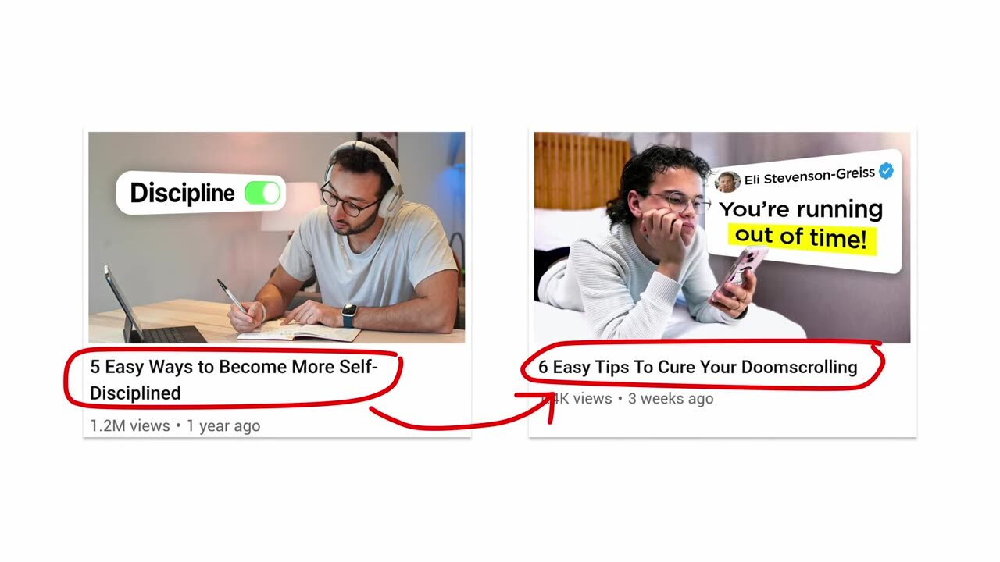
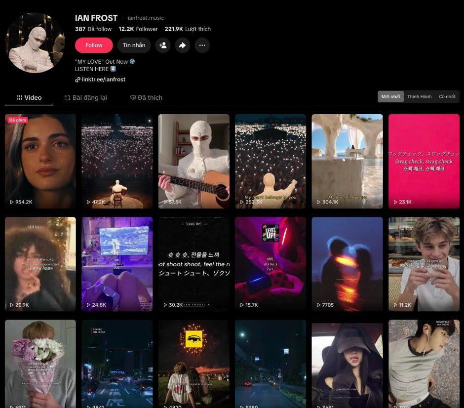

Team Tech góp vào doanh thu của công ty như thế nào, bắt đầu từ những lợi thế mình đang có
[Tên người trình bày] · 30/10/2026
Nội dung hôm nay
Bốn câu hỏi, theo thứ tự
1
Mình đang ở đâu?
Team Tech đang bán gì, cho ai
2
Mình có lợi thế gì?
Của công ty và của team Tech
3
Nên bán cái gì?
Hai đề xuất, kèm bằng chứng thị trường
4
Bắt đầu thế nào?
Thử 90 ngày, điều team cần, thảo luận
Phần 1 · Hiện trạng
Hôm nay, team Tech đang bán thời gian của chính mình
Hôm nay
Team Tech
thời gian, công sức →
Công ty
→ lương
Công ty nhìn thấy chi phí
Mục tiêu
Team Tech
tạo ra →
Sản phẩm
bán cho → khách hàng
Công ty nhìn thấy doanh thu
Muốn góp vào kinh doanh thì phải có sản phẩm, và sản phẩm đó phải bán được.
Việc phải giải quyết đầu tiên
Bán cái gì?
Bán cho ai?
Chọn đúng thì đi nhanh hơn, thành công sớm hơn và tốn ít công sức hơn.
Phần 1 · Vì sao phải bắt đầu từ lợi thế
Không có lợi thế thì không cạnh tranh được
Nếu làm sản phẩm công nghệ thuần
Đối thủ là các công ty công nghệ
Họ hơn mình về thương hiệu, vốn và đội ngũ.
Một công ty âm nhạc làm app hay phần mềm thì khách không có lý do để chọn mình.
Nếu bắt đầu từ thứ mình giỏi
Ít đối thủ hơn, khách có lý do để tin
Mình đã có kinh nghiệm, dữ liệu và kết quả thật.
Học nhanh hơn, đi nhanh hơn người mới vào nghề.
Hỏi cả team:
Điểm mạnh của công ty là gì? Điểm mạnh của team Tech là gì?
Phần 1 · Bài học từ YouTube
Người mua luôn cần một lý do để tin

Cùng một kiểu title: kênh lớn 1,2 triệu view, kênh nhỏ 1,4 nghìn. Người xem bấm vì tin, không chỉ vì nội dung.
1
Có thương hiệu
Cho khách thấy thương hiệu
2
Chưa có thương hiệu
Cho thấy đã đầu tư bao nhiêu tiền
3
Chưa có tiền
Cho thấy công sức: thời gian, nghiên cứu, số lần làm lại
Liên hệ từ seminar “Tối ưu YouTube: học từ người giỏi” · ảnh: Aprilynne Alter, “Stuck in The YouTube Dip?”
Phần 2 · Lợi thế của công ty
Công ty hiểu YouTube, hiểu cách nội dung được phân phối
Giống như lập trình
Giỏi một ngôn ngữ thì học ngôn ngữ thứ hai rất nhanh.
Giỏi SEO YouTube thì học các nền tảng khác nhanh hơn người mới: thuật toán, title, thumbnail, giữ chân, đọc chỉ số.
YouTube · đã giỏi
↓ mở rộng sang
TikTok
Facebook Reels
Instagram
Spotify · Apple Music
Câu hỏi thật
Chúng ta còn nghiên cứu YouTube mỗi ngày không?
Phần 2 · Lợi thế của team Tech
Ai cũng dùng được AI, nhưng chưa biết dùng để làm gì
“Biết võ, nhưng chưa biết đánh ở đâu, khi nào, để làm gì.”
Đã có
Dùng AI để làm mọi việc
Sau một thời gian, ai trong team cũng làm được
Còn thiếu
Một mục tiêu ra tiền
Kết quả cụ thể để biến kỹ năng thành doanh thu
Còn thiếu
Nền tảng kinh doanh
Khách hàng, kênh bán, giá, chi phí, lợi nhuận
Phần 2 · Ghép hai lợi thế
Sản phẩm nằm ở giao điểm của hai lợi thế
Công ty
Hiểu cách nội dung được phân phối, có sẵn kho nhạc
Team Tech
Sản xuất nhanh bằng AI và code, tự động hoá
Sản phẩm
Đề xuất 1
Nội dung số có nhân vật
Nhân vật, mascot, gương mặt → thương hiệu → bán sản phẩm
Đề xuất 2
Âm nhạc trong thiết bị
Đưa nhạc của công ty vào sản phẩm công nghệ của người khác
Đề xuất 1
Nội dung số có nhân vật
Vẫn theo hướng hiện tại của công ty, nhưng mở rộng từ âm thanh sang nhân vật, mascot, gương mặt. Xây thương hiệu cho nhân vật, rồi bán sản phẩm gắn với thương hiệu đó.
Đề xuất 1 · Thị trường đã có người làm
Zavyre: nhân vật đeo mặt nạ, 44 triệu view sau 4 tháng
407,7K
follower TikTok
4,6M
lượt thích
119
video từ 29/06/2026, gần 1 video mỗi ngày
10
video trên 1 triệu view, cao nhất 4,5M
Bio ghi “Artist on Spotify / Apple / YouTube / Deezer”: TikTok là kênh quảng bá, tiền về từ nghe nhạc.
Số liệu đọc trên tiktok.com/@zavyre.music ngày 29/10/2026 · 44 triệu là tổng view của 119 video hiển thị trên trang
Đề xuất 1 · Thị trường đã có người làm
Ian Frost: đổi sang nhân vật mặt nạ, 1 tuần gấp 8 lần 4 tháng trước

24 video kiểu cũ · 14/06 – 19/10
0,2M view
5 video kiểu nhân vật · 20/10 – 27/10
1,6M
Trước đó mỗi video 4–30K view. Sau khi đổi format: 47K – 954K. Kênh còn nhỏ (12,2K follower), đây là tín hiệu sớm.
Số liệu đọc trên tiktok.com/@ianfrost.music ngày 29/10/2026
Đề xuất 1 · Thị trường đã có người làm
Cinek trên Facebook: teaser 16 giây, 1,7 triệu view
1,7M
view
81K
reaction
• Mặt nạ trùm đầu, sân khấu, lời hát hiện trên màn hình
• Chỉ 16 giây, hát một đoạn điệp khúc chưa phát hành
• Kết video: tên bài “Our Song” và ngày ra mắt, kéo người xem chờ nghe bản đầy đủ
Reel Facebook của Cinek · số liệu hiển thị ngày 29/10/2026
Đề xuất 1 · Công thức chung
Cả ba kênh dùng cùng một công thức
1
Nhân vật ẩn danh
Mặt nạ thay gương mặt thật. AI dựng nhất quán, không phụ thuộc vào một người.
2
Cảnh cảm xúc
Sân khấu, đám đông, nước mắt, một câu hát. Đủ để người xem dừng lướt.
3
Sản xuất hàng loạt
Zavyre đăng gần 1 video mỗi ngày. Chỉ làm được khi quy trình đã tự động.
4
Dẫn về sản phẩm
“Out now”, link Spotify, Apple Music. Sau này có thể bán merch, sản phẩm gắn với nhân vật.
Công ty đã có nhạc và biết phân phối. Phần còn thiếu là nhân vật, và team Tech làm được phần đó.
Đề xuất 1 · Công nghệ đã sẵn sàng
MV có thể làm hoàn toàn bằng code và AI
“i'm upping my p(doom)”, mexicat: chữ, đồ hoạ, chuyển cảnh đều là code
Video mẫu: nhân vật anime, chữ chạy theo lời, cảnh 3D
Mỗi khung hình là kết quả của code. Sửa nhanh, làm lại nhanh, nhân thành nhiều video.
Đề xuất 1 · Làm phim chỉ bằng quy trình và code
Opuscar 98: một mascot đi qua 98 phim Oscar, toàn bộ bằng code
6:31
phút phim liền mạch
98
phong cách hình ảnh, mỗi phim một kiểu
0
mô hình tạo video được dùng
9,3K
sao GitHub, mã nguồn mở
Đạo diễn, vẽ, nhạc, dựng: tất cả là code do Claude Opus 5.5 viết.
Đúng bài, đúng lúc. Người dùng không phải tìm, không phải lọc.
Video: Jensen Huang và đàn robot nhỏ tại GTC Berlin (bản phụ đề tiếng Việt lan truyền trên Facebook) · robot trong video là bản trình diễn, chưa phải sản phẩm bán đại trà
Phần cuối
Đúc kết và bước tiếp theo
Mình rút ra điều gì, thử gì trước, và team Tech cần gì để làm được.
Đúc kết
Ba điều cần nhớ
1
Có sản phẩm thì mới có doanh thu
Việc đầu tiên là trả lời được: bán cái gì, bán cho ai.
2
Chọn từ lợi thế, đừng chọn theo phong trào
Công ty hiểu phân phối nội dung, team Tech sản xuất nhanh bằng AI. Sản phẩm nằm ở giao điểm.
3
Thị trường và công nghệ đều đã sẵn sàng
Kênh nhân vật đạt hàng chục triệu view. Phim 6 phút làm hoàn toàn bằng code. Team đã tự làm được MV có nhân vật.
Bước tiếp theo · đề xuất để thảo luận
Thử nhỏ trong 90 ngày, đo bằng số, rồi mới quyết
Tháng 1
Chọn và dựng
Chọn 1 nhân vật, 1 dòng nhạc sẵn có của công ty, 1 nền tảng chính.
Dựng quy trình làm video bằng code và AI.
Tháng 2
Đăng đều và đo
Đăng hằng ngày. Theo dõi mỗi tuần: view, follower, lượt nghe nhạc, chi phí mỗi video.
Tháng 3
Quyết định
Số tốt thì nhân thêm nhân vật, nền tảng. Không đạt thì dừng, rút bài học.
Song song
Đề xuất 2
Khảo sát các công ty MMO cùng ngành: họ thiếu gì, cần gì. Làm 1 bản thử nhạc theo cảm xúc.
Rủi ro cần tính trước: quy định gắn nhãn nội dung AI, bản quyền nhạc và hình, format mặt nạ đang bị nhiều kênh làm theo.
Tâm tư của team Tech
Để “biết võ” thành “ra đòn”, team Tech cần
Một mục tiêu ra tiền rõ ràng
Con số cụ thể để nhắm tới, không chỉ danh sách việc cần làm.
Kiến thức kinh doanh
Học từ đội SEO, đội kinh doanh: khách là ai, tiền đến từ đâu, chi phí bao nhiêu.
Thời gian dành riêng
Một phần quỹ thời gian cho sản phẩm mới, tách khỏi việc vận hành hằng ngày.
Được thử và được sai nhỏ
Đo bằng kết quả sau mỗi đợt thử, không đo bằng số giờ làm.
Lắng nghe
Em muốn nghe mọi người
1. Công ty mình còn lợi thế nào đang bị bỏ quên?
2. Nếu được chọn, mọi người muốn làm sản phẩm gì, bán cho ai?
3. Điều gì đang cản team Tech làm việc tạo ra doanh thu?
4. Nếu chỉ thử một việc trong 90 ngày tới, đó là việc gì?
Kết luận
Bán thời gian thì có giới hạn. Bán sản phẩm thì không.
Team Tech đã có công cụ. Việc tiếp theo là cùng nhau chọn đúng sản phẩm, đúng khách hàng.